最適人材の発掘と獲得を実現する
全研本社の採用オウンドメディアで
進める効率リクルーティング
採用オウンドメディアは、自社の認知度を上げ、採用ミスマッチを減らし、
直接採用を増やす効果があります。
必要性は感じていても、何から手を付けたらよいか？
どうすれば求める人材に見てもらえるメディアになるのか？
と足踏みされている担当者様も多いのではないでしょうか。
重要ポイントは「魅力的なコンテンツ」「継続的な運用」「キーワード選定」です。
全研本社が制作・運用、採用効果の最大化を全面サポートします。
御社の必要とする人材に当たる採用オウンドメディアを、そろそろ始めませんか？
その悩み、突破しませんか？
-
膨らむ採用コストを
低減化したいダイレクトリクルーティングもリファラル採用も始めたいがコストが気になっている。
-
ライバル企業との
差別化ができない他社と同じような求人内容の掲載になりがちで、求める層の人材が集められていない。
-

募集の外部依存で
費用が嵩んでいる採用は求人広告やエージェント頼み。毎回費用がかかる割に手応えや成果につながらない。
-

離職率が高い
採用まで行き着いても、早期離職者が絶えず、採用活動が堂々巡りになっている。
採用オウンドメディアが、
求職者の「決定」をうながす
しかし、それ以上に重要となる求職者と企業の相互理解を深めることのできる場所となります。
・求職者がなりたい自分になれるのか？
・それを提供できる企業なのか？
・求めている人物像と求職者がマッチしているのか？
採用活動に採用オウンドメディアを加えることで、共感が企業選択を後押しし、深く理解した上での意思決定を促します。マッチング精度の向上、離職率の低減が見込めます。
採用オウンドメディアを軸にすれば、リファラル採用やダイレクトリクルーティングも有効に機能していくでしょう。
Web上の求人広報として、「採用の中心」に採用オウンドメディアを置く価値は大きいのです。
成功事例で分かる
採用オウンドメディアの効果
Webディレクターになるには
Web制作関連の採用オウンドメディア


300
% 向上今まで求人メディアやエージェントに頼った採用活動を行っておりましたが、
採用オウンドメディアからのエントリーが増えました。
その結果、採用にかかるコストをカットすることができました。
また新卒採用でも採用オウンドメディアを見てのエントリーや質問が多く、
応募意欲の高い求職者が増えています。
新卒・中途に関わらず、採用オウンドメディアによって、自社の欲しい人材が集まるようになりました。
採用オウンドメディア成功のノウハウを
詳しく知りたい方はこちら
採用オウンドメディア成功の鍵
求職者に見つけてもらえる
採用オウンドメディア
全研本社が全面的にサポート！
求める人財を全研本社の採用オウンドメディアで見つけませんか？
数千のWebメディアの制作・運用実績のある弊社が、コンテンツマーケティングの知見をいかし、採用オウンドメディアの
構築、検索されるキーワード選定、運用までを全面的にバックアップいたします。
潜在・顕在ユーザーに対する御社のダイレクトアプローチを実現させましょう。
採用オウンドメディアの構築・制作
御社の強みや求職者に提供できるベネフィットを客観的な立場から分析し、掲載内容に反映させます。ターゲット人材を細かく設定し、訴求効果の高い採用オウンドメディアを構築します。
求人情報は、企業サイトやパンフレットに載せきれない項目を網羅します。実際の職場や仕事ぶりを弊社担当者が取材・インタビューを行い、求職者に寄り添ったコンテンツで構成します。
採用計画に基づいた運用計画と
コンテンツ制作
さまざまな職種、さらには新卒・中途・即戦力・マネージャー採用と多岐にわたる求人カテゴリに対応できる設計となるため、御社の採用計画に基づいたサイト運用が可能です。
ターゲット人材がどのような検索キーワードで企業や業界、職種を探すか選定から、社内人材の声の更新も行います。顕在層/潜在層の両方にアプローチできるため、リファラル採用やダイレクトリクルーティングでも有効活用できます。

御社の採用マーケティングを全面的
にサポート
弊社は、採用マーケティング全体を支援します。グーグルお仕事検索への登録、リファラル採用、ダイレクトリクルーティングなど、採用に必要なWeb上のアプローチをサポートします。
また、新卒の専任はいても、中途人材の採用力が弱い。結果的に求人サイトやエージェントに頼らなければ進まない。このような御社の課題への解決策も提案します。
採用のベストマッチを導く
採用オウンドメディア
採用オウンドメディアを活用して採用活動を強化するメリットは、マッチング向上やコスト削減だけに留まりません。
自社サービスのプロセスや成果も具体的に見えてくるので、
自社のファンの増大や社内人材のモチベーションアップも見込めます。
結果的に、応募数の増加や離職率の低下が期待できるのです。
採用オウンドメディアの制作・運用によって、社会的評価を向上させることができれば、
求職者の意思決定だけでなく、自社事業の業績にも直結していくでしょう。
採用オウンドメディア運用のメリット
-
企業ビジョン共有
企業ビジョンや方向性をわかりやすく可視化・共有できる
-
事業内容の説明
御社の商品やサービスがどのように作られ、どのように社会貢献しているかを詳細発信できる
-
企業文化・雰囲気が
わかる豊富な情報を効果的に表現でき、企業文化や雰囲気が伝わりやすい
社員の仕事ぶりが伝わる
社員の姿を通して、仕事や職場のリアル情報を伝えられる
-
自社の見直し・棚卸し
採用・人事・業務・フローなど自社全体を見直す機会となる
-
-
既存社員の
モチベーションアップ取材協力や日々の閲覧を通して、既存社員のモチベーションも向上する
採用オウンドメディアの運用フロー
採用オウンドメディアは、制作で終わりではありません。
成功させるには、企業の「イマ」を伝えるための継続運用が欠かせません。
全研本社が提供する採用オウンドメディアサービスは、御社の運用フェーズの負担も軽減します。
価格
横にスクロールしてご覧ください。
| プラン | ブランドプロテクト プラン |
ベーシック プラン |
プレミアム プラン |
|---|---|---|---|
| 制作費用 |
900,000円～ |
2,500,000円～ |
3,000,000円～ |
| 月額費用 |
50,000円～ |
400,000円～ |
500,000円～ |
| デザイン |
テンプレートタイプ
|
セミデザイン
|
フルデザイン
|
※1社様毎に合わせたオーダーメイドでのプランニングも可能です。